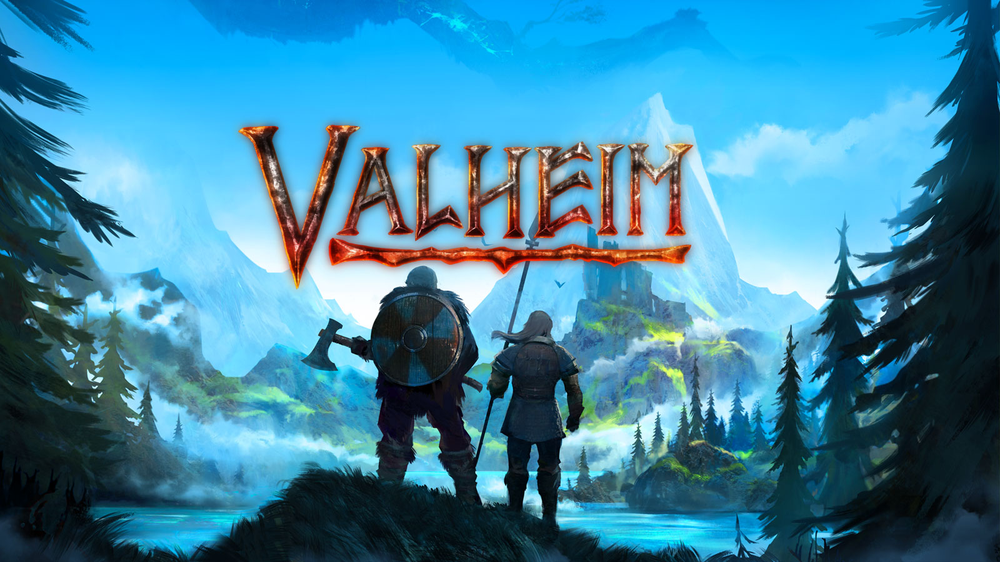

Survival Games
Survival games are a video game genre where the core focus is on staying alive in challenging, often hostile environments. These games thrust players into scenarios where resource management, adaptability, and perseverance are key to overcoming threats like starvation, exposure, predators, or other players. Rooted in the primal instinct to endure, survival games blend exploration, crafting, and strategy, often with a heavy dose of tension and unpredictability. They’ve surged in popularity over the last decade, thanks to titles that emphasize player agency and emergent storytelling.
- Minecraft
- Valheim
Although, there are a lot of survival games out there we here at LetsTalkGames have picked out two stand outs in the genre to review. We believe you guys the reader would love to know more about these two games as they are loved in the genre.
1. Minecraft

Minecraft’s genius lies in its simplicity and freedom. The survival loop hooks you fast: day one, you’re scrambling to punch a tree and avoid zombies; by day ten, you’re farming, mining, and plotting a Nether trip. Resource management is intuitive—wood, stone, iron, food—and the crafting system, while basic at first, scales into a rewarding progression of tools, armor, and redstone contraptions. Combat is clunky but functional, with iconic foes like skeletons, creepers, and the Ender Dragon giving you something to fight for. But, Minecraft isn’t flawless. The survival endgame drags—once you’ve beaten the Ender Dragon and decked out in Netherite, the loop can stall unless you set your own goals. Combat remains rudimentary; even with updates like 1.9’s attack cooldown, it lacks the depth of, say, Dark Souls or Terraria. The base game’s progression feels shallow compared to modded experiences, and tutorials are nonexistent—newbies might flounder without a YouTube guide.
For anyone looking to buy Minecraft you can find it on the Xbox or Playstation games stores. For those of you on pc you can buy it here: Minecraft
2. Valheim
Valheim hooks you with its punishing yet fair survival loop. You start with nothing—punch a tree, dodge boars, pray the rain doesn’t kill you—and claw your way up through tiers of progression: stone, bronze, iron, and beyond. Resource gathering feels weighty; chopping trees or mining ore has a tactile rhythm, and every upgrade—like swapping a flint axe for an iron one—feels earned. The crafting system shines, letting you build everything from humble shacks to sprawling longhouses with functional hearths and cozy beds. Downsides, Valheim falters in its pacing and polish. The mid-to-late game grind—mining black metal or hauling silver down mountains—can drag, especially solo, where carting resources without portals feels like busywork. Progression halts after Yagluth; the unfinished biomes (Deep North, Ashlands) and lack of a true endgame leave you adrift once the bosses are down. For a survival game, it’s light on narrative—beyond the loose Odin framing, there’s little story to latch onto, which might disappoint players craving depth over emergent tales.
For anyone looking to buy Valheim you can find it on the Xbox or Playstation games stores. For those of you on pc you can buy it here: Valheim